L'Homme Pourpre (Zebediah Killgrave) (Terre-616)
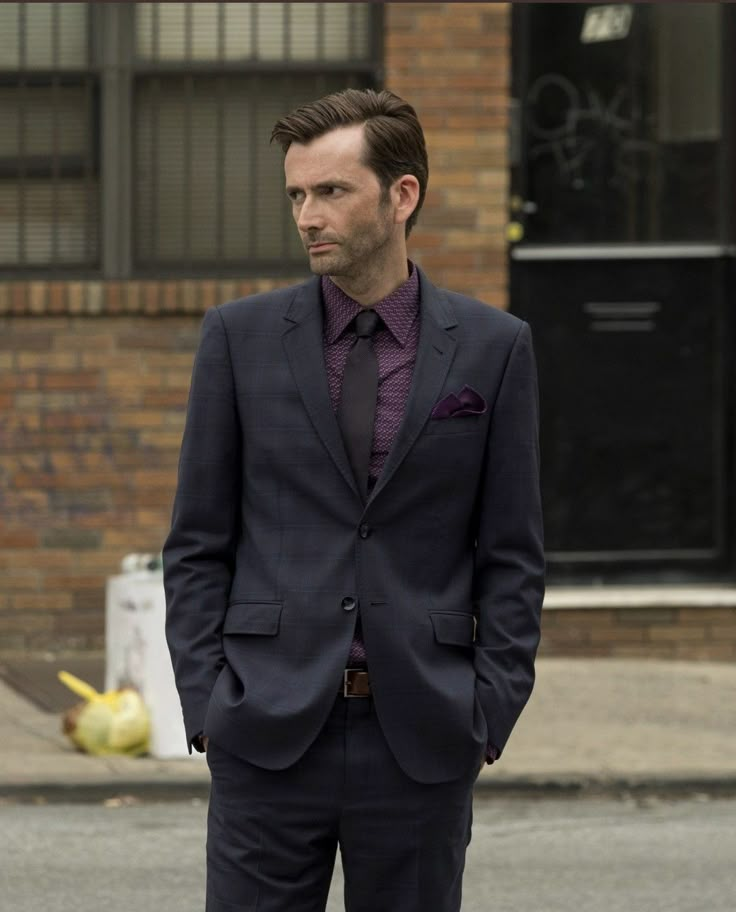
Origines :
Zebediah Killgrave est né à Rijeka, en Yougoslavie.
Devenu espion international, il fut envoyé aux États-Unis afin de s'emparer de secrets industriels d'une usine de produits chimiques.
Pendant sa mission, il fut accidentellement touché par un puissant produit, qui rendit sa peau pourpre.
Il fut ensuite arrêté, et découvrit qu'il était désormais doté d'un pouvoir de suggestion, qu'il utilisa pour s'échapper.
Se faisant désormais appeler l'Homme Pourpre, il commença une carrière de super-criminel, et utilisa son pouvoir pour collectionner les conquêtes féminines.
Il força une femme à l'épouser et à lui faire un enfant, Kara.
Cette dernière hérita de la pigmentation ainsi que du pouvoir de son père, et deviendra plus tard membre de la Division Alpha, sous le pseudonyme de Persuasion.
Killgrave disparut ensuite pendant plusieurs années avant de refaire surface en Polynésie française, où il fut capturé par le Docteur Fatalis, qui l'emprisonna et détourna son pouvoir afin de servir ses propres fins : devenir le maître du monde.
Les Avengers intervinrent, et dans le combat final opposant Fatalis et Namor aux Avengers Wonder Man, Iron Man, Captain America, Hawkeye, Mockingbird et la Guêpe, Killgrave fut apparemment tué par Namor enragé, qui détruisit la cage dans laquelle l'Homme Pourpre était enfermé.
Cependant, il avait en réalité survécu et se cacha aux États-Unis.
Il prit le contrôle de Jessica Jones (sous son alias de Jewel) et l'envoya assassiner Daredevil, mais elle fut arrêtée par les Avengers et sombra dans le coma.
A son réveil, Jean Grey l'aida à bloquer et supprimer l'emprise de Killgrave, mais cet incident laissa Jessica traumatisée à vie.
Elle abandonna même par la suite sa carrière de super-héroïne.
Finalement, Daredevil retrouva et captura l'Homme Pourpre et le fit transférer à la prison de très haute sécurité du Raft.
Killgrave s'en échappa lorsque le super-vilain Electro déclencha une évasion de masse, mais sera vite rattrapé et sévèrement battu par Luke Cage.
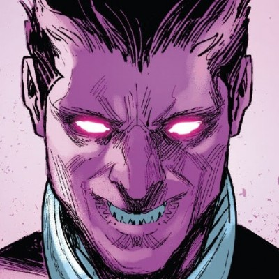
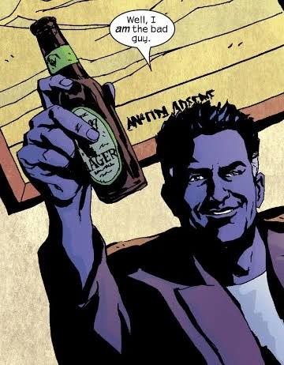
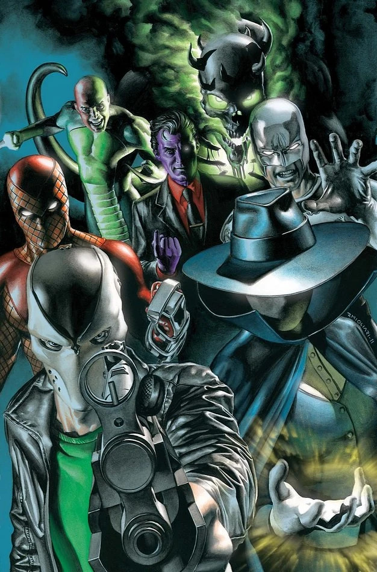
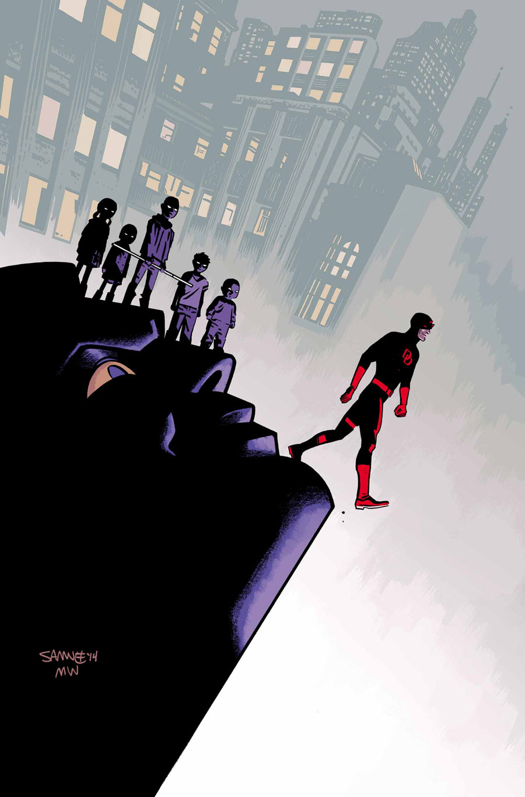
.jpg)
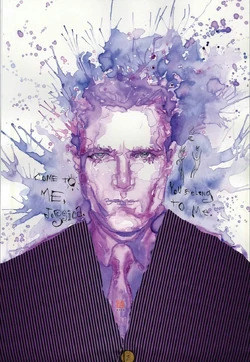
.jpg)
_Alias_Vol_1_25_001.jpg)
Capacités :
Suite à une exposition à des produits chimiques, qui lui ont donné sa couleur de peau particulière, Zebediah Killgrave a acquis la capacité de contrôler la volonté d'autrui par simples commandes verbales, équivalentes à de puissantes suggestions hypnotiques.


Apparence :
L' Homme Pourpre ne porte pas un costume à proprement parler, mais est généralement vêtu d'un costume évoquant davantage un homme d'affaires qu'un réel super-vilain traditionnel.
Sa caractéristique la plus frappante est sa peau entièrement violette, qui touche l'ensemble de son corps, dont son visage, ses mains ou son cou.
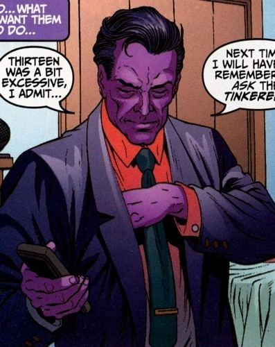
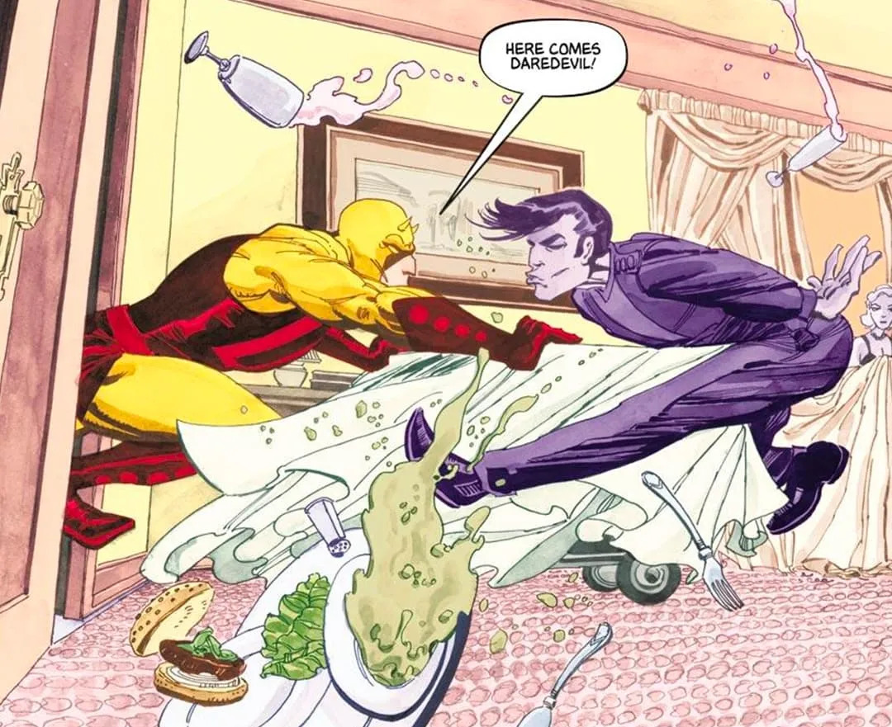
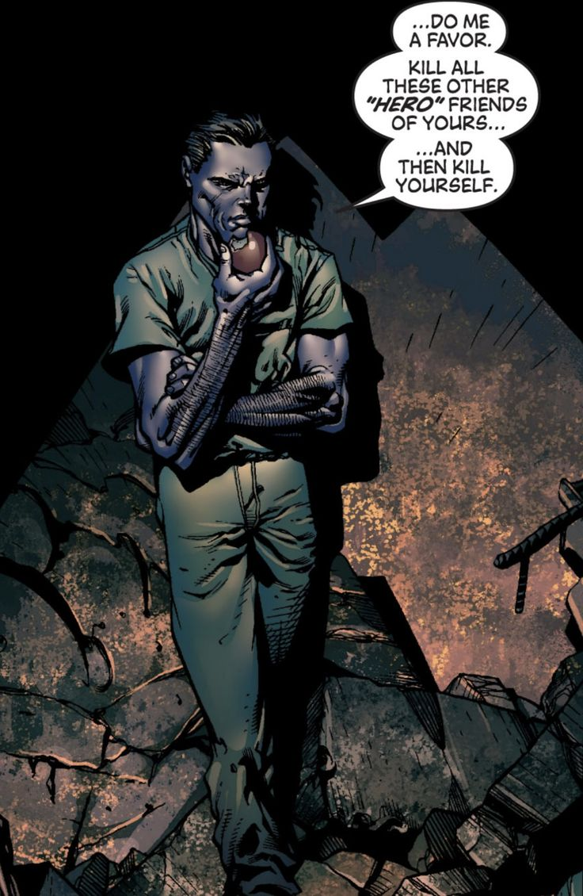
.jpg)
.jpg)
.jpg)
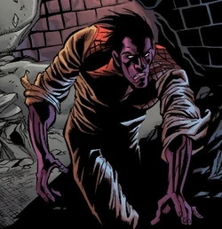
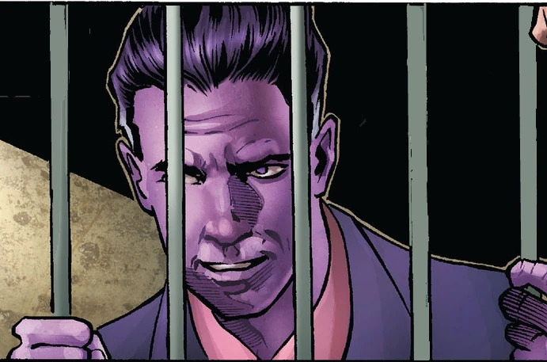
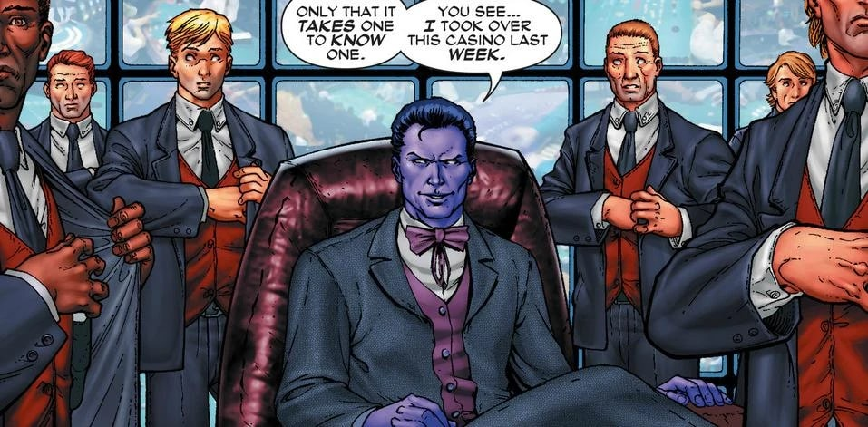